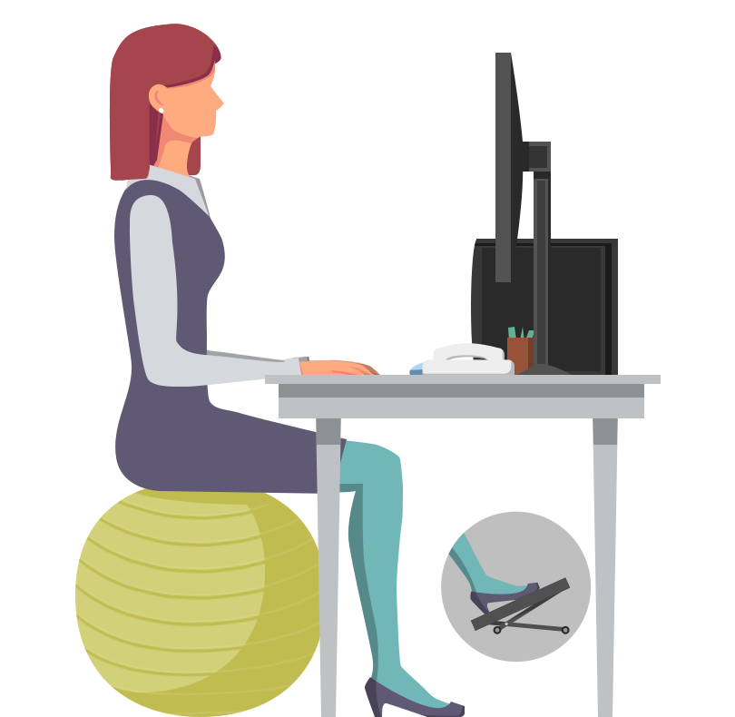
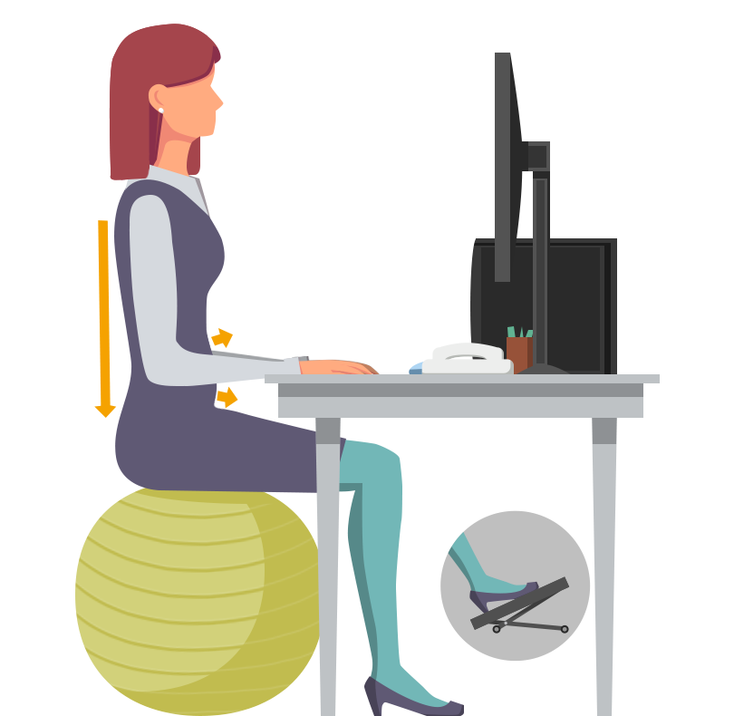
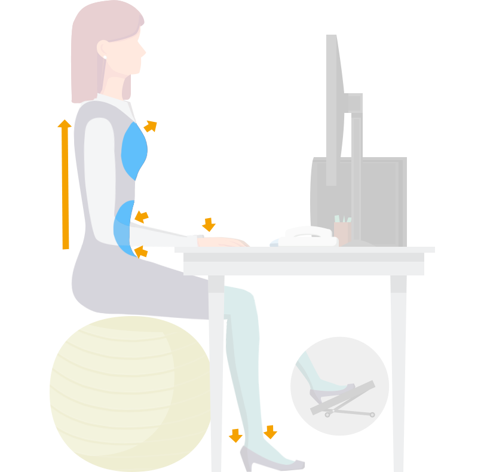
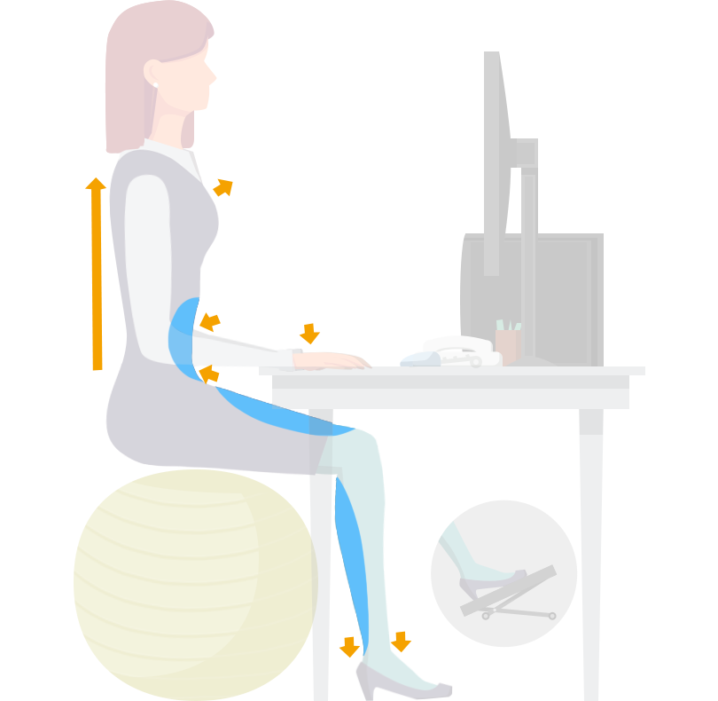
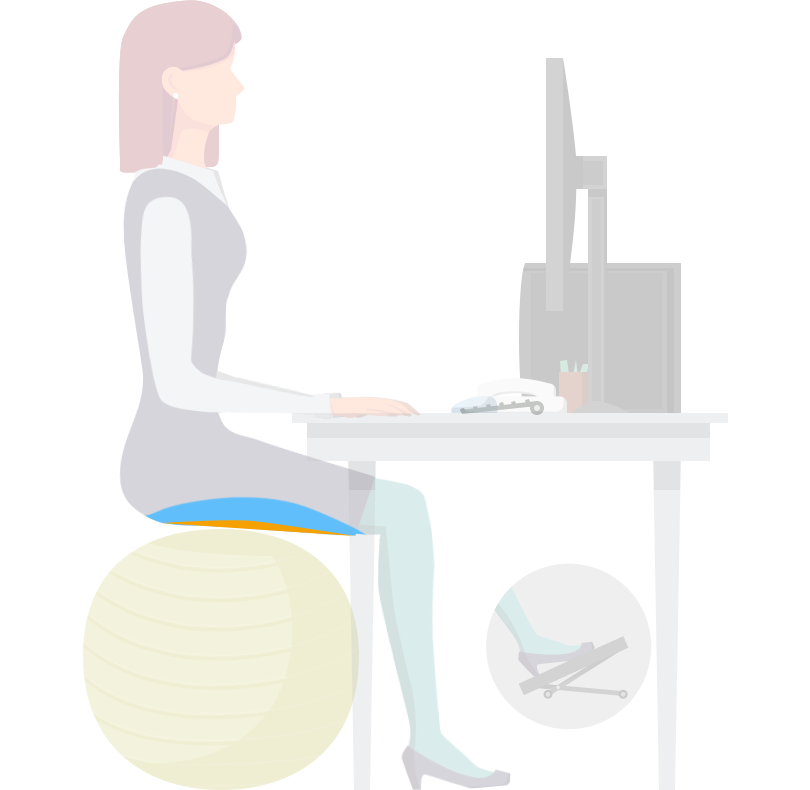

<div class="app-main" id="app-exercise-abdominal">
    ${require('./partial/warm-up.html')}
    <div class="app-page app-page-1 undisplayed">
        <div class="app-illustrations">
            <div class="step step-0 step-image"></div>
            <div class="transparent step step-1 step-expiration step-image"></div>
            <div class="transparent step step-2 step-inspiration step-image"></div>
            <div class="transparent step step-expiration-advice-1 step-image"></div>
            <div class="transparent step step-expiration-advice-2 step-image"></div>
            <div class="transparent step step-expiration-advice-3 step-image"></div>
            <div class="transparent step step-expiration-advice-4 step-image"></div>
            <div class="transparent step step-expiration-advice-5 step-image"></div>
        </div>
        <div class="app-texts">
            <div class="app-instructions">
                <p class="step step-0 step-text">Posez les mains sur votre bureau.</p>
                <div class="step step-1 step-expiration">
                    <p class="transparent step-text">En poussant sur vos mains et vos talons, allonger le dos dans l’axe de la colonne comme pour vous relever, en gainant bien la ceinture abdominale.</p>
                    
                </div>
                <div class="step step-2 step-inspiration">
                    <p class="transparent step-text">Revenir en position initiale en gonflant le ventre, sans forcer et le dos bien droit.</p>
                    
                </div>
            </div>
            <div class="app-advices transparent">
                <h2>Conseils & Astuces</h2>
                <p class="step step-text step-expiration-advice-1">Lorsque vous allongez le dos, gainez vos abdominaux comme pour mettre un jean trop serré.</p>
                <p class="undisplayed step step-text step-expiration-advice-2">Vous devez sentir vos jambes travailler, et vos abdominaux se contracter.</p>
                <p class="undisplayed step step-text step-expiration-advice-3">N’hésitez pas à exagérer le mouvement, jusqu’à ce que le ballon ne vous soutienne plus.</p>
                <p class="undisplayed step step-text step-expiration-advice-4">Pensez à maintenir la cambrure du dos durant l'exercice.</p>
                <p class="undisplayed step step-text step-expiration-advice-5">Arrêtez l’exercice quand la fatigue ou l’inconfort se fait sentir.</p>
            </div>
        </div>
    </div>
</div>